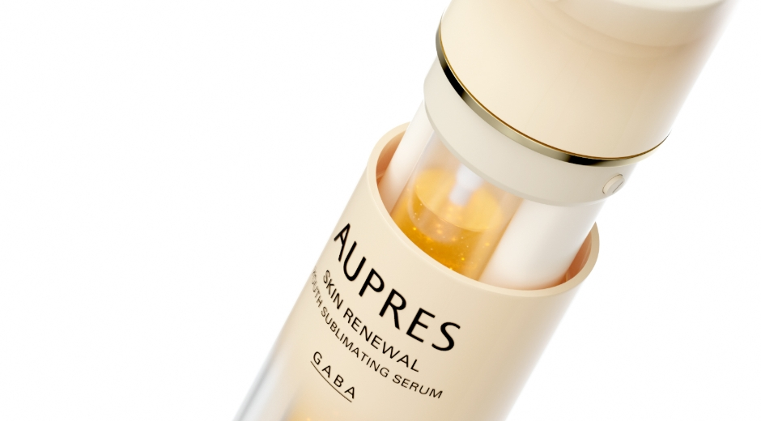
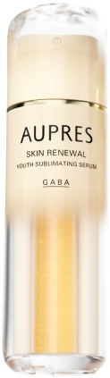
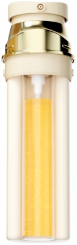
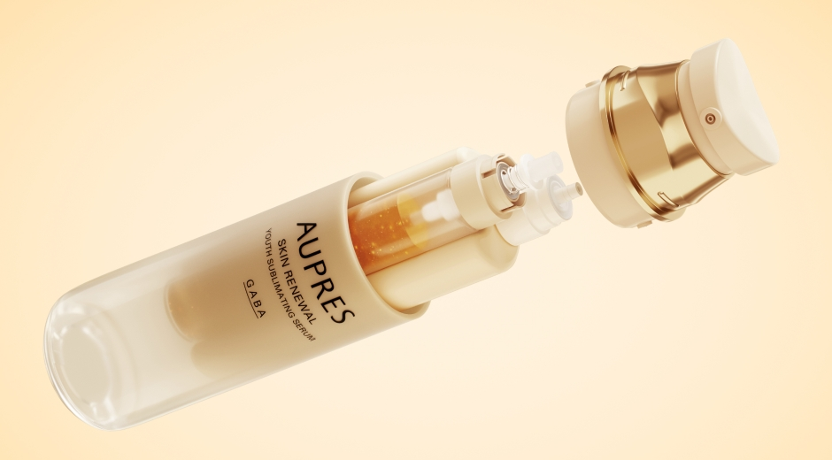
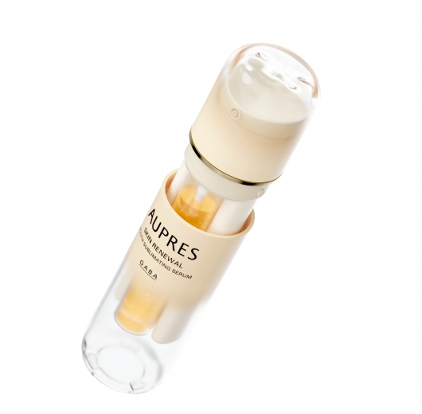
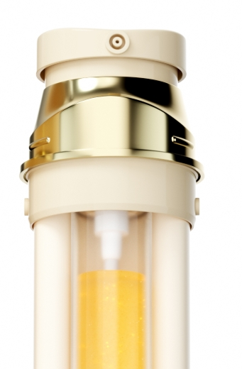

- 状态
- 方案中标并正式上线
- 任务
- 产品建模、不同角度产品图、双泵与替换芯结构展示、成分视觉素材
- 边界
- 主要负责产品三维视觉资产；详情页整合与后续应用由项目团队协同完成


从完整外观，到内部结构。
双泵精华不仅需要呈现通透、精致的产品质感，还要让内部双管与替换芯结构清楚可见。我分别完成完整产品与内部结构的三维视觉，在统一材质和光线关系下，让外观展示与结构说明可以被详情页直接调用。

把双泵结构，拆开讲清楚。
完整产品能够建立第一印象，但不足以说明双泵与替换芯之间的关系。因此，我补充了产品拆解视角，将泵头、双管与瓶身分层呈现，让复杂结构在一张画面中更容易被理解，也为详情页的结构说明提供了直接证据。
让成分表达更具视觉感知力。
产品结构解决了“如何理解产品”，详情页还需要承接成分与质地信息。我将分子结构融入金色液体形态，通过透明、流动与光泽变化，为抽象成分信息提供更直观的视觉载体，并与产品本身的金色精华质感保持一致。


从产品建模，到可用于详情页的视觉资产。
最终交付覆盖完整产品、内部结构、拆解视角及成分视觉素材，既呈现产品质感，也帮助用户理解双泵与替换芯关系。这套视觉资产随后进入详情页制作，方案最终中标并正式上线。